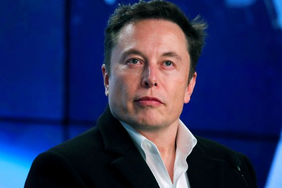
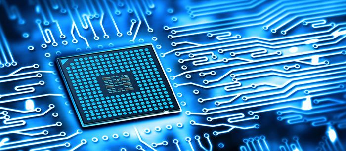

Mes chers lecteurs, je pense que vous avez déjà rêvé d'une voiture autonome. Elon Musk vous a écouté en créant une gamme de voiture se nommant TESLA et pouvant se conduire sans la moindre action. Vous pouvez trouver cela drôle mais malheureusement pour vous, cette voiture est l'une des innovations les plus incroyables du début du 20eme siècle. Par conséquent son prix est lui aussi incroyable, Il vous faudra débourser la modique somme de 80 000$. Mais est-ce-que cela en vaut vraiment la peine? Avoir une voiture qui roule toute seule ne vous enchante-elle pas? Pour moi c'est tout le contraire. Bon ce n'est pas le sujet dont nous allons parler aujourd'hui. On va voir ensemble comment fonctionne cette voiture et qui est à la tête de cette prouesse technologique.
Elon Musk est pour moi un exemple de réussite et c'est pour cela qu'il est très connu aux Etas-Unis.Il travaille principalement sur les besoins futurs. Il a créé l'entreprise SPACE X qui vise à une colonisation sur Mars lorsque notre planète sera trop instable, il travaille sur un train nommé HYPER LOOP qui permettrait de relier Los Angeles à San Fransisco en moins de 30 minutes, soit un parcours de 551 kilomètres à plus de 1 102 km/h, beaucoup plus rapidement qu'un avion (qui parcourt en théorie cette même distance en 35 minutes à la vitesse de 885 km/h) et sa vitesse pourrait atteindre les 1G ce qui est énorme. Il est aussi l'un des précurseurs de l'entreprise PAYPAL. On pourrait se demander comment fait-il ? Nous ne le saurons jamais malheureusement. Elon Musk a crée toutes ses entreprises dans le but de changer le monde et l'humanité. Ses objectifs sont de réduire le réchauffement climatique par la production et la consommation d'énergie durable et réduire le « risque de l'extinction humaine » en créant une vie multi-planétaire par l'établissement d'une colonie humaine sur Mars. Elon Musk devient la première personnalité la plus riche grâce à ses divers placements dans TESLA. (Pour en savoir plus n'hésiter à cliquer sur sa tête) Nous allons voir dans un premier temps une vidéo qui montre qu'elle roule toute seule. Pour cela cliquez sur le lien présent sur le logo de la voiture qui va vous rediriger vers la vidéo de la voiture autonome. Après avoir vu cela, nous sommes d'accord, c'est absolument incroyable: la voiture roule sur une autoroute toute seule. Elle change de direction, elle s'arrête et la chose, qui est la plus drôle, est que cette voiture double d'autres voitures. Je n'imagine même pas la réaction de l'autre conducteur! Bon pour être plus sérieux on voit que la voiture n'a besoin d'aucune aide extérieure, on lance un trajet et la voiture le suit grâce à des différents programmes dont nous allons parler ultèrieurement. Malheureusement le système n'est pas encore accepté par toutes les nations car il y a encore de nombreuses réglementations qui ne sont pas en points mais certains pays comme la France acceptent les voitures autonomes de stade 3. La France acceptera en 2022 les voitures autonomes de stade 4. Tesla
Vers

EM

Nous allons maintenant parler de la chose la plus importante à mes yeux. Comment marche cette voiture? De quelle façon? Je vais vous répondre. La voiture du futur est composée de caméra pour identifier les panneaux, les feux, le marquage au sol, les cyclistes, les piétons, les animaux, etc.
mais aussi de radars de plusieurs types :
- des radars lidar, c’est-à-dire des radars à faisceaux laser qui repèrent les autres véhicules
- des radars longue portée pour capter la position et la distance des autres véhicules
- des capteurs à ultrasons pour détecter les obstacles à faible distance
ainsi qu'un GPS qui localise le véhicule dans l’espace et configure les trajets.
La voiture est aussi composée de divers algorythmes qui analysent non pas des statistiques mais plutôt des séquences vidéos ce qui est assez atypique.L'intelligence artificielle y est aussi très présente.
Sprauer thomas 2nd8